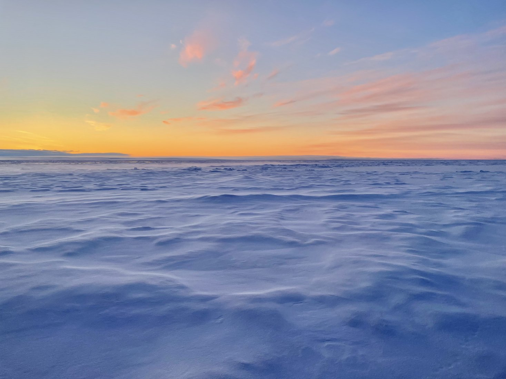
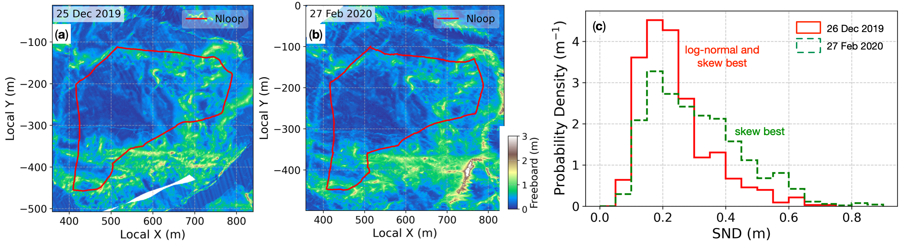
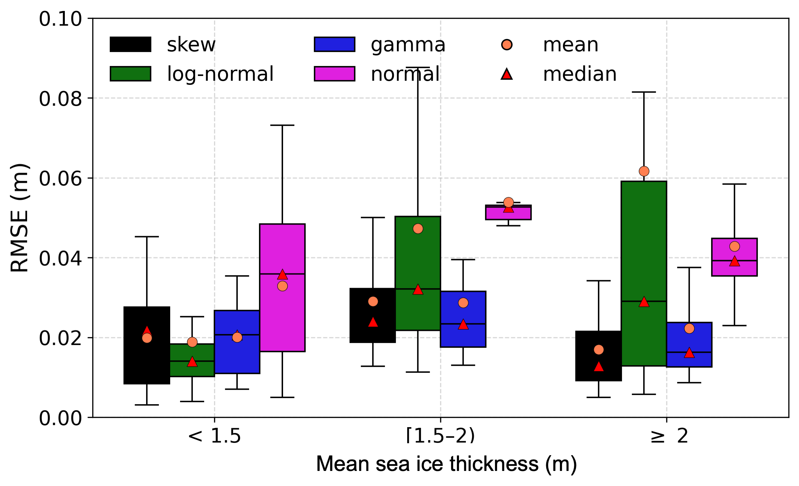
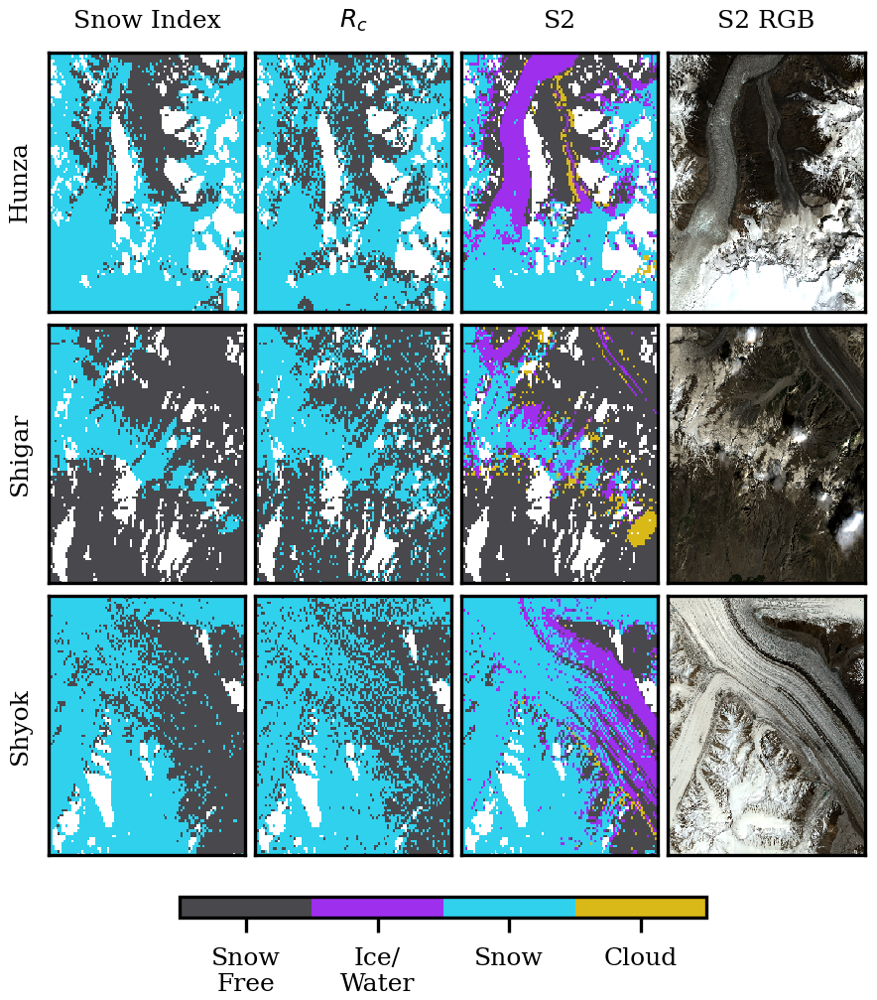

snow
Snow
This project studies how snow is distributed across sea ice and mountain glaciers, and how satellites can detect snow properties from space.

Why it matters
Snow changes how sunlight, heat, and moisture move between the atmosphere and the frozen surface below. On sea ice, snow also affects estimates of ice thickness. In
In mountain regions, seasonal snowmelt is important for water supply. Because snow can change over short distances and through time, satellites and field measurements are needed together.
How we measure it
For sea ice, the work uses field measurements from Arctic and Antarctic campaigns to describe how snow depth changes with ice age, ice thickness, flooding, and weather events.

What we learn
The sea-ice work shows which statistical patterns best describe snow depth under different ice conditions, helping models and satellite algorithms represent snow at scales smaller than a satellite pixel.

For glaciers, the work combines Sentinel-1 radar images with topographic information to map wet snow in the Karakoram, where steep terrain makes snow mapping difficult. We proposed a new integrated snow index to map wet snow, as shown in the figure below.
The glacier work produces seasonal wet-snow maps that reveal when and where snowmelt happens, supporting water-resource and climate studies in high-mountain regions.
